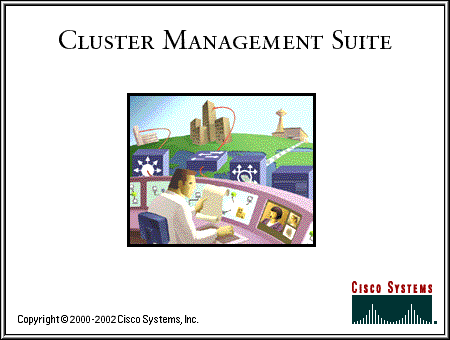

CMS will start momentarily. If it does not, please verify that JavaScript is enabled and the
Java Plug-in
is installed.
.
JavaScript
Specific browser required - see the
Release Notes
Disabled
Please enable JavaScript in Options/Preferences